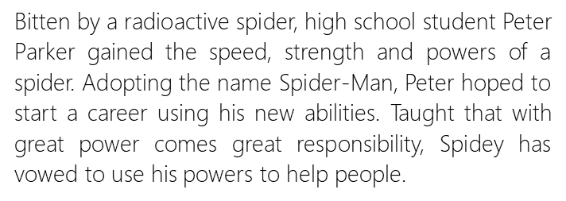
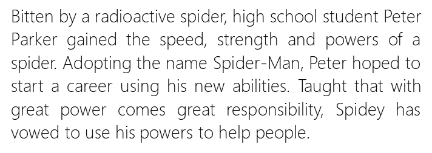

蜘蛛侠
SPIDER-MAN
高中生彼得•帕克不小心被一只受过放射性感染的蜘蛛咬伤，随后获得了超凡的速度、力量和蜘蛛一般的能力。彼得给自己取名蜘蛛侠，并用自己的能力展开了全新的人生。在学会“能力越大责任越大”的道理后，蜘蛛侠发誓要用自己的能力来锄强扶弱。
真实姓名：彼得•本杰明•帕克（Peter Benjamin Parker）
身 高：5英尺10英寸
重 量：167英镑
技 能：彼得能够在任何物体的表面攀附，拥有超乎常人的力量（能够抬起10吨重物），比普通人敏捷15倍。矫健灵活的身手搭配强大的吐丝能力，让彼得能够飞檐走壁来去自如。他的蜘蛛感应能力能让他提前预知危险，只要他不刻意抵抗自己的条件反射，他就能够避开大部分的伤害。 PS：在和女皇（Queen）接触、和魔伦（Morlun）战斗后，蜘蛛侠获得了有机网腺和手刺一类的新技能。但在蜘蛛侠和墨菲斯托（Mephisto）达成交易后，他的新技能都被消除了。
能 力：彼得是一位成就显赫的科学家、发明家和摄影师。
隶属团队：复仇者联盟；曾隶属秘密守卫者、“新神奇四侠”、不法分子
首次登场：《惊奇幻想》（Amazing Fantasy）第15期（1962）
起源故事：《惊奇幻想》（Amazing Fantasy）第15期（1962）
创作背景
蜘蛛侠初次登场是在1962年8月，在杂志《惊人幻想》（Amazing Fantasy）第15期，后来十分受欢迎才有了以他为主题的漫画。在蜘蛛侠诞生的1960年代早期，出现超级英雄漫画里的青少年角色通常只能扮演主角们的助手。 然而蜘蛛侠系列借着让彼得．帕克，一个“有些自恋却又自我排斥、缺乏信心且孤单”的高中生担任主角打破了这个局面，并成功引起了读者们的共鸣。 形象解读：这是美国漫画第一次以青少年为主角，在之前的漫画作品里他们一般是充当超级英雄的助手角色。这在当时是一个突破，也让那些年轻读者很容易产生共鸣。 身为一个青少年，彼得除了面对那些超级英雄该肩负的责任，同时也必须应付一些青春期时会遇到的麻烦。 同时，在一系列漫画作品中，蜘蛛侠也在成长，从一个害羞的高中生到一个苦恼但外向的大学生，接着并结婚而且成为了自己高中母校的老师，并成为了复仇者联盟的一员。
演员信息
托比·马奎尔（Tobey Maguire），1975年6月27日出生于美国加州，美国演员。
1992年，17岁的托比出演《了不起的斯科特》，首次担当男主角。1997年，他接连演出了李安的《冰风暴》和伍迪艾伦的《解构爱情狂》。1999年，他主演的《心尘往事》获奥斯卡最佳影片奖提名。2002年，托比·马奎尔主演了电影《蜘蛛侠》，之后他又出演电影的两部续集。2003年，托比接下了《奔腾年代》，这部励志片在票房和口碑上获得了双重成功，并赢得了奥斯卡最佳影片的提名。 2004年他又主演了《蜘蛛侠》的续集 。2007年5月2日，同样由他主演的《蜘蛛侠3》在中国上映。
2010年，托比凭借在《兄弟》中的演出获得第67届美国金球奖剧情类最佳男主角的提名 。2013年，托比与多年好友莱昂纳多·迪卡普里奥合作演出了《了不起的盖茨比》。2016年10月18日，托比·马奎尔与妻子与詹妮弗·梅耶发表联合声明宣布离婚 。